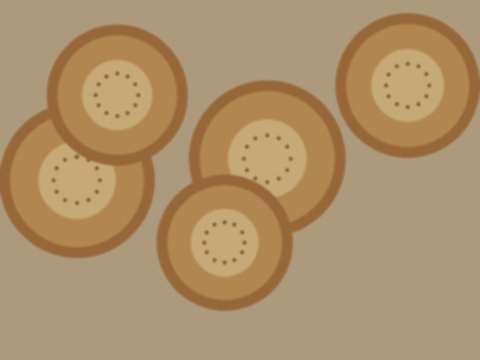
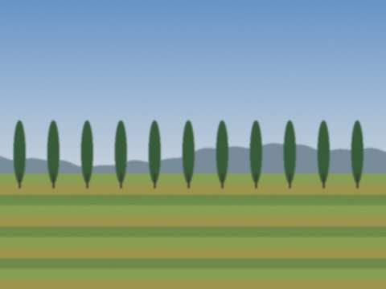

Dec262009
Saturday, December 26th, 2009 at 8:50 pm by Zarina
This November Kündölük is five years old. It opened when I was still writing on MyPage by FTP with my nephew :) I moved here four and half years ago and now there are so many comments that my sister says, "it is not a blog, it is a tea room".
Thank you Dilnoza-apa, Jen, Vika, Nurlan, Aunt Maria, Aidana and all of you who visit and do not write anything. I see the counter. I know you are there.
Next year I try to do the recipes with photo for each step. My nephew gave me a new camera. Prepare for 40 photos of onions.
Posted in News | 2 Comments »
Mar222009
Sunday, March 22nd, 2009 at 10:00 pm by Zarina

The pot at sunrise. We found the walnut. Not me.It is Nauryz and I did not sleep. Every year the women of our street cook sümölök, a sweet wheat paste, for the whole night. It is only wheat sprouts, flour and water, and a lot of stirring. We put stones (or walnuts) in the cauldron to keep it from burning, and each woman stirs for an hour, with the long wooden spoon, and tells a story. At midnight the old women sing.
By the sunrise it is dark brown and sweet, no sugar needed, the wheat gives it. Who finds a stone or walnut in her plate will have luck this year. I found the walnut at four in the morning in the cauldron, but it doesn't count, it is not in my plate :)
For a small cauldron (we make 5 times this): 1 kg wheat sprouts (green wheat, 4 days in a wet cloth), 2 kg flour, 6 litres water, 1 cup oil, 6 walnuts.
Posted in Holidays | 2 Comments »
Jan172009
Saturday, January 17th, 2009 at 7:40 pm by Zarina
This winter the electricity comes for four hours and goes for four. You never know. I make a plan every morning with a piece of paper on the fridge. At 7:00 the light is on, I boil the water and cook rice. At 11:00 it goes. I have a primus, a wood stove in the yard, and the tandyr that my husband's brother built behind the house.
Tips from my kitchen:
- Cook the big things when the light is on, the small things on the primus.
- Keep the broth always ready in a thermos, with a lid and a towel.
- Dough rises slowly in a cold house, so start in the evening and let it sleep.
- Tandyr is warm and heats the yard. We put non on its walls and the whole street smells.
- Candle on a plate, not on the table. I learnt it the hard way.
The refrigerator is a window sill. It is minus 8 outside, which is the best freezer.
Posted in Notes | 2 Comments »
Jul122008
Saturday, July 12th, 2008 at 5:00 pm by Zarina

The walnut tree behind my uncle house in the village. The nuts are still green.The old rule says you pick green walnuts on Yuhanna night, before they are hard inside, and you make jam. My uncle picked 100 for me. The hands are black for two weeks after! Wear gloves. I did not wear gloves.
Ingredients:
- 100 green walnuts (soft inside, you can go through with a needle)
- 1.5 kg sugar
- 1 litre water
- cloves, a stick of cinnamon
- lime or lemon
Instructions: Prick each walnut with a fork, soak in cold water 7 days, change the water each morning to remove the bitter. Then boil 10 minutes, rinse. Syrup from sugar and water, with cloves and cinnamon. Put nuts in the syrup, boil 15 minutes, leave overnight. Again the next day. At the end a little lemon. After one month in the jar it is black and soft and it tastes like nothing else in the world.
Some families make a liqueur of the same nuts, with vodka, 40 days in the sun, and open for Christmas. I only know it from my uncles :)
Posted in Sweets | 2 Comments »
Mar202008
Thursday, March 20th, 2008 at 6:30 pm by Zarina
Everybody asks me about the money after the 17th, so a little note from the kitchen, no politics. My basket this week, in the new money rate:
- Bread (non): 2.50 som, before it was 2.00
- Potatoes: 1.50 per kilo
- Rice from the Chu valley: 6 per kilo
- Mutton: 38 per kilo
- Onions, carrots: around 1.20
So I buy less meat, more rice, more beans. The grandmothers say it was the same in 1993 when the new som started. They say we learn cooking from the money.
Posted in Notes | 1 Comment »